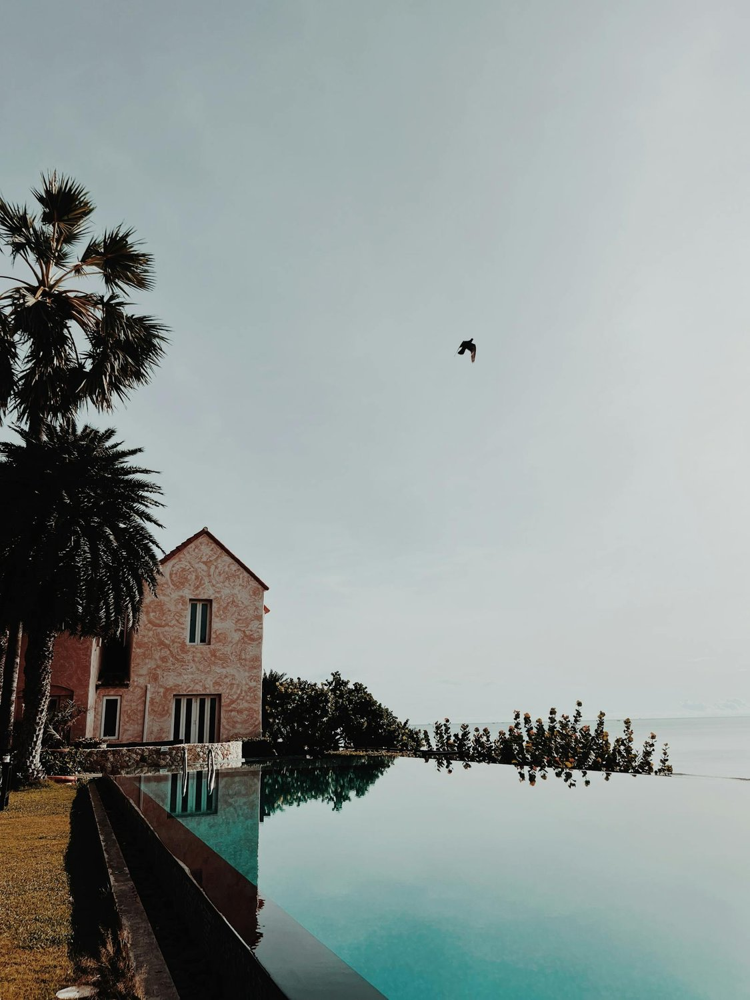
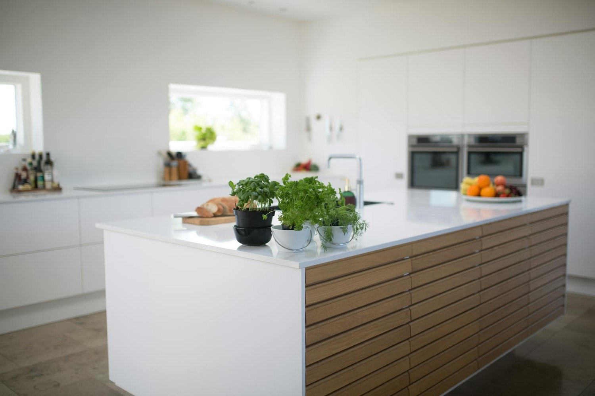
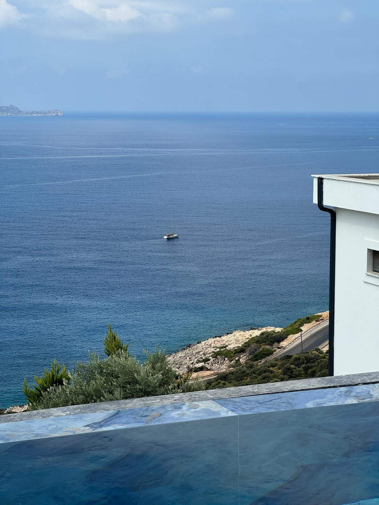

01
Reforma integral
Rediseño completo de villa: distribución, instalaciones, acabados y mobiliario. Una sola dirección de obra, un solo responsable.
Construcciones Tomás Ilovan. Reformas integrales, interiorismo y piscinas de borde infinito en villas de la Costa Blanca. Quince años de oficio entre Calpe, Benissa, Moraira, Altea y Jávea.
No reformamos rápido. Reformamos para que la obra aguante décadas de sol, sal y uso real. Elegimos material con la arquitecta, levantamos muro con el equipo propio, entregamos la casa cuando está.
Rediseño completo de villa: distribución, instalaciones, acabados y mobiliario. Una sola dirección de obra, un solo responsable.
Ejecución técnica completa: vaso, canal de rebose, coronación, sistema de filtración y horizonte alineado con la vista. Acabados en gresite, microcemento o piedra natural.
Selección de materiales nobles, carpintería a medida, iluminación técnica y coordinación con arquitectos del cliente o estudio asociado.
De la primera conversación a la entrega con garantía. Cronograma real, presupuesto cerrado antes de empezar, una sola persona al teléfono durante toda la obra.

Redistribución completa de dos plantas, sustitución de carpintería exterior, revestimiento en listón de madera y piscina de borde infinito orientada al Peñón. Ejecutada en siete meses.

Reforma de cocina abierta al salón. Encimera e isla en microcemento pulido continuo, carpintería en roble natural sin tiradores, iluminación técnica sobre isla. Entregada en seis semanas.

Vaso de doce metros con canal de rebose alineado al horizonte marino. Coronación en piedra caliza local, interior en microcemento gris y sistema de filtración silenciosa. Orientada al sureste.
Trabajamos con una paleta reducida, elegida para envejecer bien bajo el sol y la sal del Mediterráneo. Muestra física antes de aplicar, siempre.
Trabajamos exclusivamente dentro de la Marina Alta y Marina Baixa. El oficio se hace mejor cuando el equipo no pierde dos horas en la carretera y el estudio está a veinte minutos de la obra.
Construcciones Tomás Ilovan opera desde 2009 en la Costa Blanca.
Reformas integrales ejecutadas entre Calpe, Moraira y Jávea.
Calpe, Benissa, Moraira, Teulada, Altea y Jávea.
Albañilería, fontanería, electricidad y carpintería en plantilla.
No trabajamos con presupuestos automáticos. Leemos lo que escribís, pedimos una visita a la finca si encaja, y te decimos si podemos hacernos cargo o no.
Te escribimos por WhatsApp · +34 662 542 978